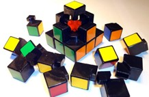
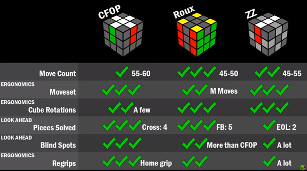

De website waar u zich nu op bevindt heb ik gemaakt als mijn Passion Project op
het HBO ICT Fontys. De website is bedoeld om algoritmes te oefenen en dient als
een voorbeeld.
Op de banner van de home pagina gebruik ik een animatie, een methode waar ik pas
aan het eind achter kwam. Nu is de rubik's cube geprogrammeerd. Op de banner kun
je niet scrollen omdat deze dan te ver uitzoomt (niet aan te raden). Op de
pagina eronder, waar je het algoritme kunt kiezen staat er momenteel nog maar 1,
de rest komt er later bij maar dit is alsvast mijn Prove Of Concept. De gele
blokjes die je hier ziet beelden een rubik's cube scenario uit die je kunt
oplossen met een
algoritme.
Rechts onder staat een vraagteken. Op deze pagina vindt je informatie over mijn
website en over de Rubik's Cube. Er zijn dus maar 3 pagina's
Zelf ben ik regelmatig bezig met een Rubik's Cube. Het is een hobby voor me die ik vaak heb laten liggen en weer heb opgepakt toen er een vriendin van me naar vroeg.
Om een Rubik's Cube op te lossen werk je volgens methodes. Het laatste gedeelte
van zo'n methode zijn de algoritmes. Om algoritmes te
leren kijk ik regelmatig video's op YouTube en streep ik in een
PDF
af welke algoritmes ik onder de knie heb en waar ik mee bezig ben.
Het Nadeel hiervan is dat, vaak als je een nieuwe leert, je al snel de tel kwijt
bent en de logica erin nog niet ziet.
Daarom heb ik een Rubik's Cube gecodeerd zoals die in het PDF bestand zou staan en doet deze het algoritme voor terwijl je zelf op je eigen tempo om de Rubik's Cube heen kunt draaien. Zo zie je de matchende blokken in elkaar vallen en raak je minder snel in de war met de notaties.
De Rubik’s Cube is vernoemd naar de bedenker Ernő Rubik. Hij was een Hongaarse wiskundige architect geboren in 1944. Hij heeft de Rubik’s Cube bedacht in 1974.
De 3x3 Rubik’s Cube is een puzzel dat bestaat uit 26 blokjes in een vorm van een kubus. De blokken kunnen allemaal horizontaal en verticaal gedraaid worden. Het doel is om deze vanaf elke willekeurige positie terug in zijn originele staat te krijgen.
Tegenwoordig worden er veel wedstrijden gehouden. Er zijn veel verschillende soorten wedstrijden hierin zoals:
Om een 3×3 rubik’s cube op te lossen moet je ervoor zorgen dat elke kant alleen bestaat uit de kleur van de center (het middelste blokje). Zoals je op de foto hier rechts van ziet, zie je dat de centers statsisch tegenover elkaar zijn, en dit zijn dan ook de enigste blokken die je niet kunt verplaatsen (tenzij je een 4×4 / 6x6 etc. hebt, ligt aan de core).
Er zijn verschillende methodes om een Rubik’s Cube op te lossen. De bekendste speedcube methodes zijn:
Buiten deze methodes om heb je ook nog andere methodes, zoals Old Pochmann (voor geblinddoekt) en Kociemba’s algoritme (wordt gebruikt voor Fewest Moves en door computers).
Om een Rubik’s Cube op te lossen met algoritmes wordt er gebruik gemaakt van notaties. Deze notaties geven aan welke kant je moed draaien. Het is het beste te omschrijven in een plaatje: De letters betekenen het volgende:
Alles gaat met de klok mee, tenzij er een ‘ achter staat. Dan gaat het tegen de klok in.
Een Algoritme is een set bewegingen die je kunt doen om een bepaald scenario op te lossen. Vaak gebruik je algoritmes alleen voor OLL en PLL. Een algoritme wisselt altijd blok A met Blok B met Blok C etc... Omdat de meeste mensen vaak beginnen met een Wit Kruis, eindigen ze vaak met de gele kant. Daarom worden algoritmes meestal met Geel aangegeven.
Fridrichmethode: CFOP is de meest bekendste speedcube methode, deze word meestal tijdens de wedstrijden gebruikt. Bij CFOP los je de kubus op in de onderstaande volgorde:
Je maakt eerst het witte kruis, hiervoor heb je nog geen algoritmes nodig, dit is simpelweg logica. Zoals ik bij Oplossing al uitlegde heeft een 3×3 rubik’s cube 6 statische centers. Tijdens het maken van je witte kruis moet je er dus ook voor zorgen dat het matcht met de center (zie het tweede plaatje van links).
Voor F2L ( tijdens het onderzoeken zag ik ongeveer het concept dat ik ook voor ogen had bij dit linkje, een rubik’s cube die de bewegingen voor doet. Ik wil het zo maken dat je alles zou kunnen afspelen, maar dan vooral voor OLL & PLL ) gebruik je over het algemeen ook geen algoritmes, ze zijn er wel, maar deze zijn niet noodzakelijk. De bedoeling is dat je hierbij de hoeken van het witte kruis en de tweede laag tegelijkertijd invoegt (zie het middelste plaatje).
Tegenover Wit zit altijd Geel (statisch), als je een wit kruis hebt is geel
automatisch de onderkant. In het plaatje hierboven is de kubus dus met wit naar
beneden gedraaid en groen naar voren.
Bij
OLL
zorg je ervoor dat de onderkant zijn gehele kleur heeft (geel). Dit doe je
doormiddel van algoritmes. Om OLL volledig te kennen moet je 57 algoritmes uit
je hoofd leren. Deze 57 algoritmes wil ik het liefst allemaal op een pagina
hebben zodat je per algoritme kunt kijken hoe ze gaan.
PLL staat voor Permutate Last Layer, dit betekend dat je de laatste blokken
nog moet oriënteren om op de juiste plek te hebben. Op het plaatje hier
rechts van zie je dat de cube bijna is opgelost, alleen de rechterkant (waar
rood centraal staat) nog worden georiënteerd.
PLL kent 21 algoritmes.